Cantonese on Windows
How to write, type, listen, and dictate Cantonese on Windows Computers.
This guide was written to work for Windows 11, Windows 10, and Windows 7.
* Windows can technically read out Cantonese text (Text-to-Speech). However, a 3rd party app is required to do this easily.
** Windows 11 supports Cantonese Dictation (Speech-to-Text). However, the majority of Windows users are on Windows 10, which does not support Cantonese dictation.
Write
To input Cantonese Chinese by Handwriting:
- Open Settings > Time & Language > Language
- Click Add a preffered language
- Select Chinese (Traditional, Hong Kong SAR).
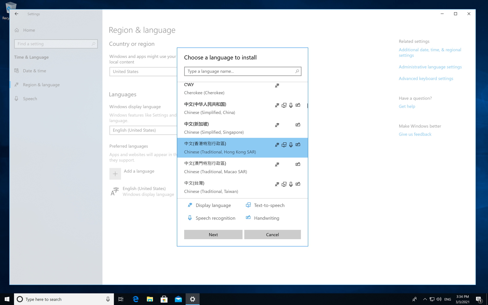
- Right-Click the Taskbar, and make sure that "Show touch keyboard button" is ticked.
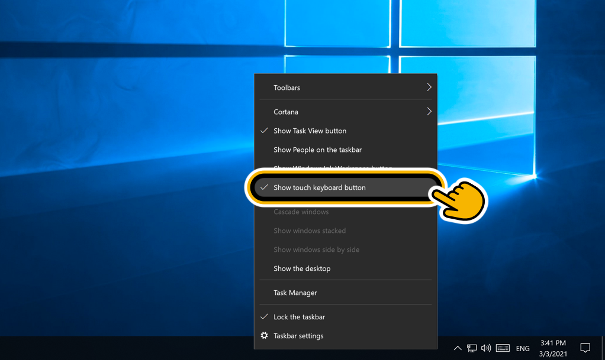
- Tap on the ‘Touch Keyboard’ button to open it. Change the language to Chinese (bottom-right), and change the mode to Handwriting .
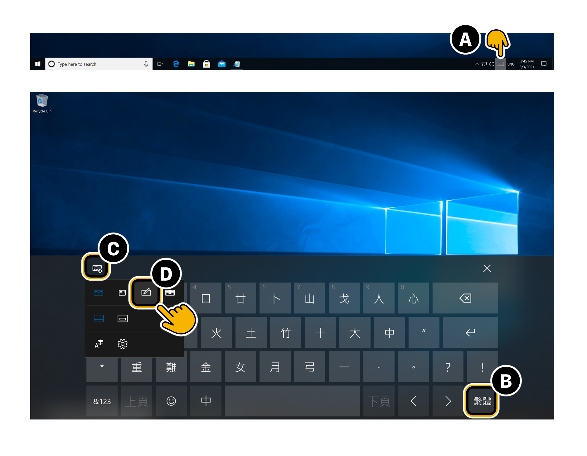
Now you can tap on the 'Touch Keyboard' button at anytime, and start handwriting chinese characters.
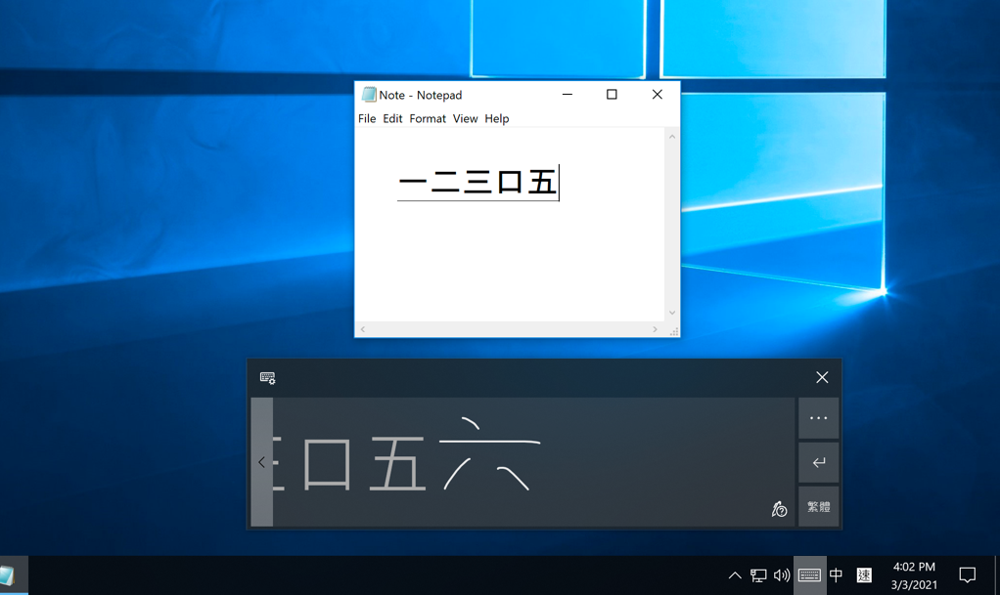
Type
The two most popular programs for typing Cantonese in Windows 10 are RIME and CPIME. Both are free and have support for older versions of Windows.
|
RIME Weasel (中州韻 小狼毫)
- A third-party IME. It’s open source and usually more reliable than other IMEs. The User Interface is in Chinese only.
|
CPIME (Cantonese Phonetic IME)
- A more official Windows IME. However, it can sometimes fail to install for some versions of Windows.
|
|
RIME Supports:
- Jyutping Romanization.
- Multiple input methods can be enabled.
|
CPIME Supports:
- Jyutping, Yale, Sidney Lau, & EduHK Romanizations.
- Only 1 input method (Jyutping, Yale, etc.) can be enabled at a time.
|
How to use RIME to type Cantonese in Windows 10:
Do you already have RIME installed?
No, I don't have RIME installed yet. I want to install RIME bundled with Cantonese.
To type Cantonese on Windows:
- Run windows-sfx-2021.01.19-installer.exe. (The latest windows-sfx exe from Rime-Cantonese.)
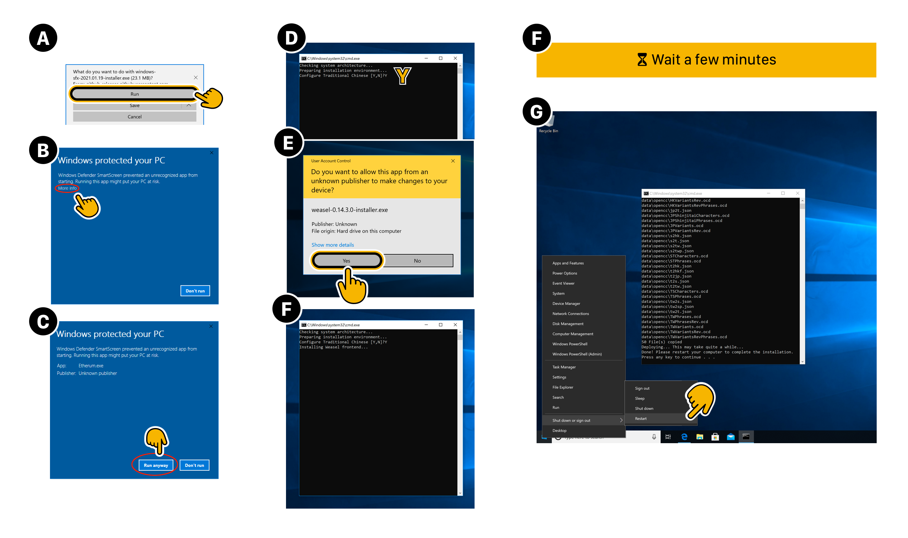
- The installation will take a few minutes. When it's done,
Restart your computer.
- In Taskbar > Language Picker, select RIME.
(Ignore RIME's language description in this menu. It has no affect on what language RIME actually uses.)
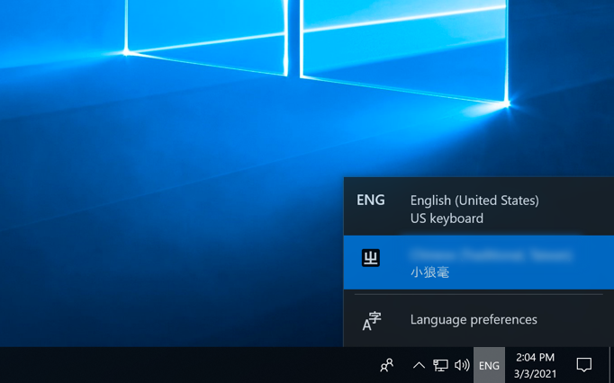
- Right-Click on RIME and select 「輸入法設定 (S)」 (Input method setting (S)).
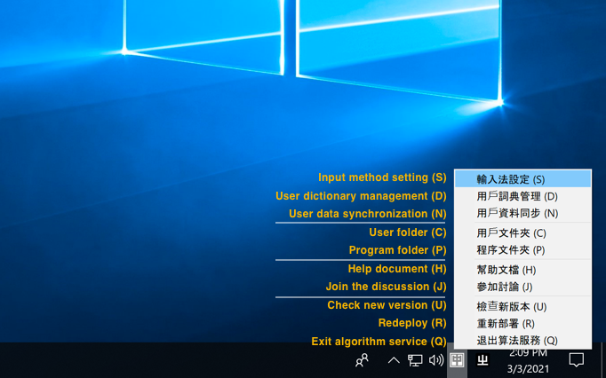
- Uncheck all options besides 「粵語拼音」 (Cantonese Pinyin, i.e. Jyutping).
(Alternatively, you can have multiple RIME input modes, switching between them using [ Ctrl + ` ].)
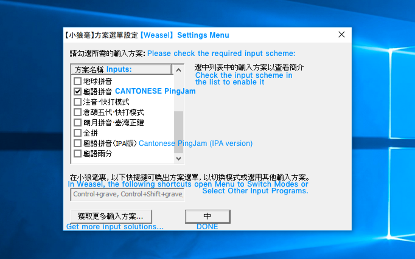
- Click 【中】 to apply the language changes. Click 【中】 again to confirm RIME’s appearance. RIME (小狼毫) will then update itself (⧗ 維護中) with your new settings.
Now, you can select RIME anytime from your Language Picker, and type Cantonese.
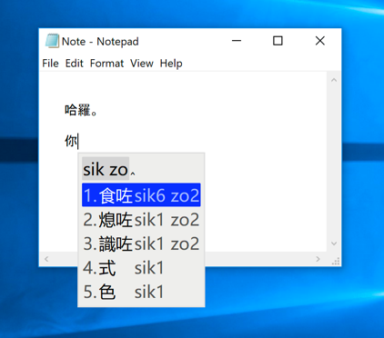
Help, I already have an old installation of RIME and I want to add Cantonese to it:
To add Cantonese input to an old installation of RIME:
- Right-Click on RIME and select 「輸入法設定 (S)」 (Input method setting (S)).
- Select 獲取更多輸入方案… (Get more input options…). This will open the Rime Package Installer console.
- In the Rime Package Installer: Type cantonese and hit Enter.
- Back in RIME's Input Settings, tick 粵語拼音 (Cantonese Pinyin).
How to use CPIME to type Cantonese in Windows 10:
See instructions on how to install CPIME on Windows 10, by PinyinJoe.
Listen (TTS)
Windows can read out Cantonese Chinese text (Text to Speech). However, to do this easily, a 3rd party program is required.
To get started:
-
Check to make sure you have the Chinese (Traditional, Hong Kong SAR) language pack installed at: Settings > Time & Language > Add a language > Chinese (Traditional, Hong Kong SAR)
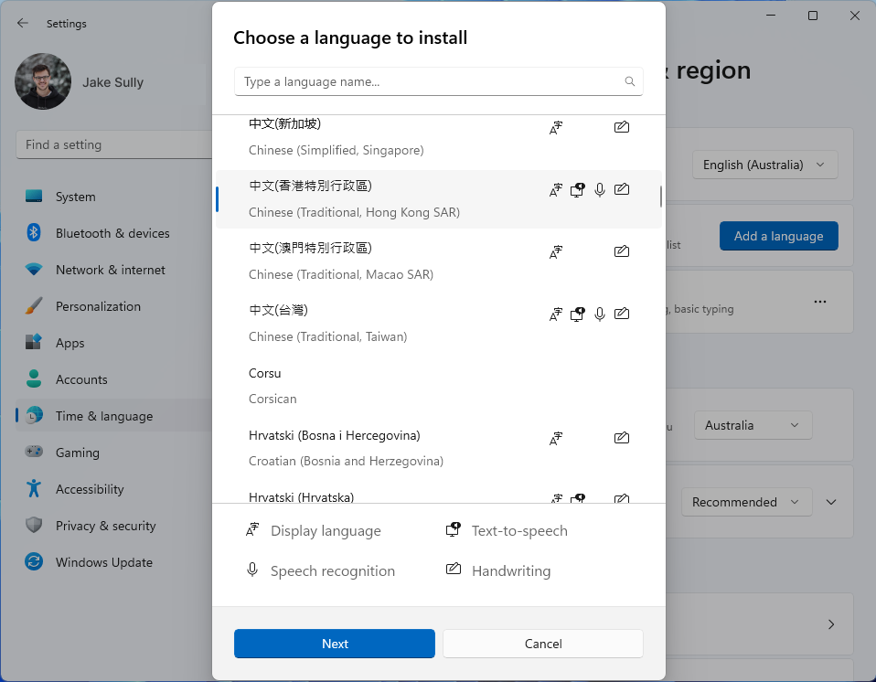
- If you are on Windows 10 or older (skip this if you are on Windows 11 or newer):
- Go to CONTROL PANEL > Ease of Access > Speech Recognition > Text to Speech.
- Set the Text-to-Speech Voice to [ Microsoft Tracy Desktop - Chinese (Traditional, HongKong SAR) ]
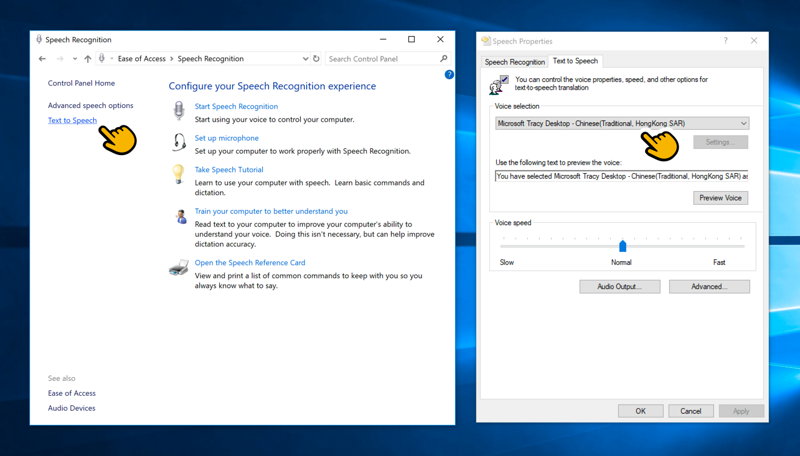
-
Download & Install Simple TTS Reader
-
Open the program. In the list of voices, select "Microsoft Tracy Desktop - Chinese (Traditional, HongKong SAR)".
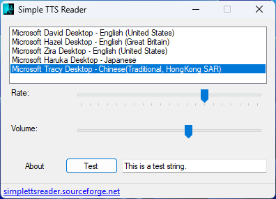
(If you don't see "Microsoft Tracy", try repeating step 2 and restarting your computer.)
-
Now, you can Select Cantonese Text and have it be read out loud by Copying it (Control+C, or, Right-Click > Copy).
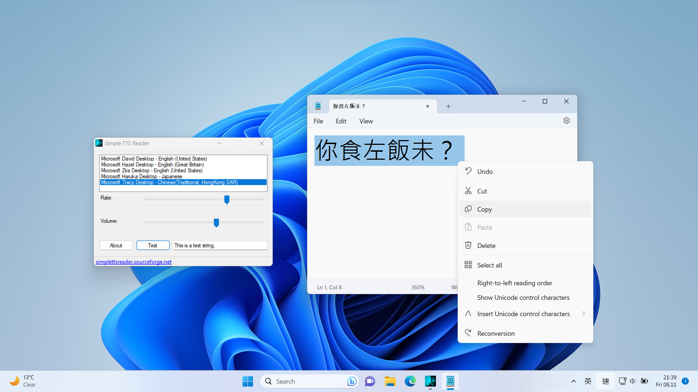
To stop text from being read out every time it's copied, you can close the program or reduce its volume.
(If the program is reading out text, but you can't find it, it might be in the "System Tray". The System Tray is on the Bottom-Right of the screen.)
Dictate
Microsoft added Cantonese dictation (speech recognition, speech-to-text) in Windows 11. (Windows 10 and older do not actually support Cantonese dictation, even though Windows 10 lists it as part of its Cantonese language pack.)
To input Cantonese by dictating it on your Windows PC:
- Make sure the Cantonese Language Pack is installed. To install it:
- Go to Settings > Time & Language > Add a language > Chinese (Traditional, Hong Kong SAR)
Now, to dictate Cantonese:
- At the end of your Taskbar (usually in the bottom-right of your screen), change the “Input Method” to any input that says “Chinese (Traditional, Hong Kong SAR)”.
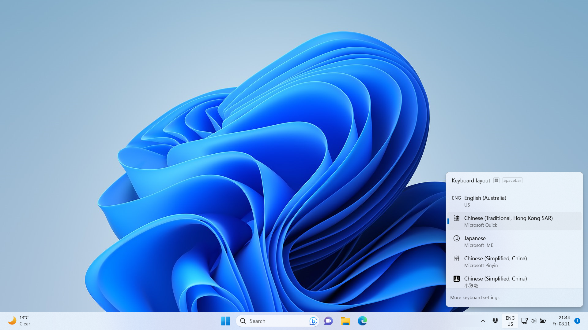
- Open Notepad
- Activate Voice Typing (Dictation) by pressing the "Window Logo" key and "H" key together.
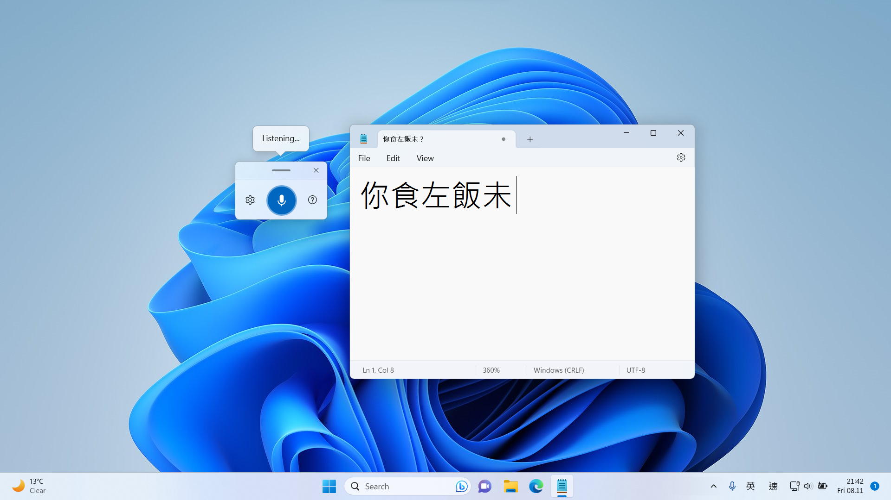
Now instead of typing, you can speak Cantonese Chinese to your Mac and have it write it down for you.
Cortana
Microsoft’s Voice Assistant, Cortana, is being deprecated. It is being replaced by Bing Chat.
Bing Chat does not currently support Cantonese Chinese.
Footnotes
Note: The information here is based on Windows 11 and Windows 10 (version 1909).
Page last updated August 2023.